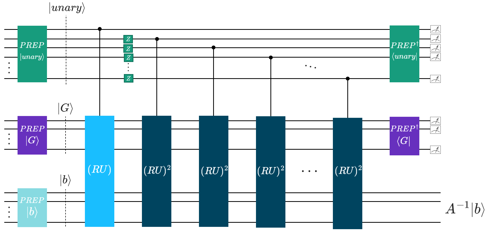

CKS Algorithm#
- CKS(A: BlockEncoding, eps: float, kappa: float, max_beta: float = None) BlockEncoding[source]#
Performs the Childs–Kothari–Somma (CKS) quantum algorithm to solve the Quantum Linear System Problem (QLSP) \(A \vec{x} = \vec{b}\), using the Chebyshev approximation of \(1/x\). When applied to a state \(\ket{b}\), the algorithm prepares a state \(\ket{\tilde{x}} \propto A^{-1} \ket{b}\) within target precision \(\epsilon\) of the ideal solution \(\ket{x}\).
For a block-encoded Hermitian matrix \(A\), this function returns a BlockEncoding of an operator \(\tilde{A}^{-1}\) such that \(\|\tilde{A}^{-1} - A^{-1}\| \leq \epsilon\). The inversion is implemented using a polynomial approximation of \(1/x\) over the domain \(D_{\kappa} = [-1, -1/\kappa] \cup [1/\kappa, 1]\).
The asymptotic complexity is \(\mathcal{O}\!\left(\log(N)s \kappa^2 \text{polylog}\!\frac{s\kappa}{\epsilon}\right)\), where \(N\) is the matrix size, \(s\) its sparsity, and \(\kappa\) its condition number. This represents an exponentially better precision scaling compared to the HHL algorithm.
This function integrates all core components of the CKS approach: Chebyshev polynomial approximation, Linear Combination of Unitaries (LCU), qubitization with reflection operators, and the Repeat-Until-Success (RUS) protocol. The semantics of the approach can be illustrated with the following circuit schematics:

- Implementation overview:
Compute the CKS parameters \(j_0\) and \(\beta\) (
cks_params()).Generate Chebyshev coefficients and the auxiliary unary state (
cks_coeffs(),unary_prep()).Build the core LCU structure via qubitization operator.
The goal of this algorithm is to apply the non-unitary operator \(A^{-1}\) to the input state \(\ket{b}\). Following the Chebyshev approach introduced in the CKS paper, we express \(A^{-1}\) as a linear combination of odd Chebyshev polynomials:
\[A^{-1}\propto\sum_{j=0}^{j_0}\alpha_{2j+1}T_{2j+1}(A),\]where \(T_k(A)\) are Chebyshev polynomials of the first kind and \(\alpha_{2j+1} > 0\) are computed via
cks_coeffs(). These operators can be efficiently implemented with qubitization, which relies on a unitary block encoding \(U\) of the matrix \(A\), and a reflection operator \(R\).If the block encoding unitary is \(U\) is Hermitian (\(U^2=I\)), the fundamental iteration step is defined as \((RU)\), where \(R\) reflects around the auxiliary block-encoding state \(\ket{G}\), prepared as the
inner_caseQuantumFloat. Repeated applications of these unitaries, \((RU)^k\), yield a block encoding of the \(k\)-th Chebyshev polynomial of the first kind \(T_k(A)\).We then construct a linear combination of these block-encoded polynomials using the LCU structure
\[\text{LCU}\ket{0}\ket{\psi}=\text{PREP}^{\dagger}\cdot \text{SEL}\cdot \text{PREP}\ket{0}\ket{\psi}=\tilde{A}\ket{0}\ket{\psi}.\]Here, the \(\text{PREP}\) operation prepares an auxiliary
out_caseQuantumfloat in the unary state \(\ket{\text{unary}}\) that encodes the square root of the Chebyshev coefficients \(\sqrt{\alpha_j}\). The \(\text{SEL}\) operation selects and applies the appropriate Chebyshev polynomial operator \(T_k(A)\), implemented by \((RU)^k\), controlled onout_casein the unary state \(\ket{\text{unary}}\). Based on the Hamming-weight \(k\) of \(\ket{\text{unary}}\), the polynomial \(T_{2k-1}\) is block encoded and applied to the circuit.To construct a linear combination of Chebyshev polynomials up to the \(2j_0+1\)-th order, as in the original paper, our implementation requires \(j_0+1\) qubits in the
out_casestate \(\ket{\text{unary}}\).The Chebyshev coefficients alternate in sign \((-1)^j\alpha_j\). Since the LCU lemma requires \(\alpha_j>0\), negative terms are accounted for by applying Z-gates on each index qubit in
out_case.- Parameters:
- ABlockEncoding
The block-encoded Hermitian matrix to be inverted.
- epsfloat
Target precision \(\epsilon\).
- kappafloat
An upper bound for the condition number \(\kappa\) of \(A\). This value defines the “gap” around zero where the function \(1/x\) is not approximated.
- max_betafloat, optional
Optional upper bound on the complexity parameter \(\beta\).
- Returns:
- BlockEncoding
A new BlockEncoding instance representing an approximation of the inverse \(A^{-1}\).
Examples
The following examples demonstrate how the CKS algorithm can be applied to solve the quantum linear systems problem (QLSP) \(A \vec{x} = \vec{b}\), using either a direct Hermitian matrix input or a preconstructed block-encoding representation.
Example 1: Solving a 4×4 Hermitian system
First, we define a small Hermitian matrix \(A\) and a right-hand side vector \(\vec{b}\):
import numpy as np A = np.array([[0.73255474, 0.14516978, -0.14510851, -0.0391581], [0.14516978, 0.68701415, -0.04929867, -0.00999921], [-0.14510851, -0.04929867, 0.76587818, -0.03420339], [-0.0391581, -0.00999921, -0.03420339, 0.58862043]]) b = np.array([0, 1, 1, 1]) kappa = np.linalg.cond(A) print("Condition number of A: ", kappa) # Condition number of A: 1.8448536035491883
Next, we solve this linear system using the CKS quantum algorithm:
from qrisp import prepare, QuantumFloat from qrisp.algorithms.cks import CKS from qrisp.block_encodings import BlockEncoding from qrisp.jasp import terminal_sampling def prep_b(): operand = QuantumFloat(2) prepare(operand, b) return operand @terminal_sampling def main(): BA = BlockEncoding.from_array(A) x = CKS(BA, 0.01, kappa).apply_rus(prep_b)() return x res_dict = main() # The resulting dictionary contains the measurement probabilities # for each computational basis state. # To extract the corresponding quantum amplitudes (up to sign): amps = np.sqrt([res_dict.get(i, 0) for i in range(len(b))]) print("QUANTUM SIMULATION\n", amps) # QUANTUM SIMULATION # [0.02714082 0.55709921 0.53035395 0.63845794]
We compare this to the classical normalized solution:
c = (np.linalg.inv(A) @ b) / np.linalg.norm(np.linalg.inv(A) @ b) print("CLASSICAL SOLUTION\n", c) # CLASSICAL SOLUTION # [0.02944539 0.55423278 0.53013239 0.64102936]
We see that we obtained the same result in our quantum simulation up to precision \(\epsilon\)!
To perform quantum resource estimation, replace the
@terminal_samplingdecorator with@count_ops(meas_behavior="0"):from qrisp.jasp import count_ops @count_ops(meas_behavior="0") def main(): BA = BlockEncoding.from_array(A) x = CKS(BA, 0.01, kappa).apply_rus(prep_b)() return x res_dict = main() print(res_dict) # {'gphase': 51, 't_dg': 1548, 'cz': 150, 'ry': 2, 'z': 12, 'h': 890, 'cy': 50, 'cx': 3516, 'x': 377, 's_dg': 70, 'p': 193, 's': 70, 't': 1173, 'u3': 753, 'measure': 18}
The printed dictionary lists the estimated quantum gate counts required for the CKS algorithm. Since the simulation itself is not executed, this approach enables scalable gate count estimation for linear systems of arbitrary size.
Example 2: Using a custom block encoding
The previous example displays how to solve the linear system for any Hermitian matrix \(A\), where the block-encoding is constructed from the Pauli decomposition of \(A\). While this approach is efficient when \(A\) corresponds to, e.g., an Ising or a Heisenberg Hamiltonian, the number of Pauli terms may not scale favorably in general. For certain sparse matrices, their structure can be exploited to construct more efficient block-encodings.
In this example, we construct a block-encoding representation for the following following tridiagonal sparse matrix:
import numpy as np def tridiagonal_shifted(n, mu=1.0, dtype=float): I = np.eye(n, dtype=dtype) return (2 + mu) * I - 2*np.eye(n, k=n//2, dtype=dtype) - 2*np.eye(n, k=-n//2, dtype=dtype) N = 8 A = tridiagonal_shifted(N, mu=3) b = np.random.randint(0, 2, size=N) print(A) # [[ 5. 0. 0. 0. -2. 0. 0. 0.] # [ 0. 5. 0. 0. 0. -2. 0. 0.] # [ 0. 0. 5. 0. 0. 0. -2. 0.] # [ 0. 0. 0. 5. 0. 0. 0. -2.] # [-2. 0. 0. 0. 5. 0. 0. 0.] # [ 0. -2. 0. 0. 0. 5. 0. 0.] # [ 0. 0. -2. 0. 0. 0. 5. 0.] # [ 0. 0. 0. -2. 0. 0. 0. 5.]]
This matrix can be decomposed using three unitaries: the identity \(I\), and two shift operators \(V\colon\ket{k}\rightarrow-\ket{k+N/2 \mod N}\) and \(V^{\dagger}\colon\ket{k}\rightarrow-\ket{k-N/2 \mod N}\). We define their corresponding functions and the block-encoding using Linear Combination of Unitaries (LCU):
from qrisp import gphase def I(qv): pass def V(qv): qv += N//2 gphase(np.pi, qv[0]) def V_dg(qv): qv -= N//2 gphase(np.pi, qv[0]) unitaries = [I, V, V_dg] coeffs = np.array([5,1,1,0]) BA = BlockEncoding.from_lcu(coeffs, unitaries)
Next, we solve this linear system using the CKS quantum algorithm:
def prep_b(): operand = QuantumFloat(3) prepare(operand, b) return operand @terminal_sampling def main(): x = CKS(BA, 0.01, kappa).apply_rus(prep_b)() return x res_dict = main() amps = np.sqrt([res_dict.get(i, 0) for i in range(len(b))])
We, again, compare the solution obtained by quantum simulation with the classical solution
c = (np.linalg.inv(A) @ b) / np.linalg.norm(np.linalg.inv(A) @ b) print("QUANTUM SIMULATION\n", amps, "\nCLASSICAL SOLUTION\n", c) # QUANTUM SIMULATION # [0.43917486 0.31395935 0.12522139 0.43917505 0.43917459 0.12522104 0.31395943 0.43917502] # CLASSICAL SOLUTION # [0.43921906 0.3137279 0.12549116 0.43921906 0.43921906 0.12549116 0.3137279 0.43921906]
Quantum resource estimation can be performed in the same way as in the first example:
@count_ops(meas_behavior="0") def main(): x = CKS(BA, 0.01, kappa).apply_rus(prep_b)() return x res_dict = main() print(res_dict) # {'gphase': 51, 's_dg': 70, 's': 120, 'z': 12, 'x': 127, 't': 298, 'u3': 157, 'cx': 1194, 'p': 118, 'ry': 2, 'h': 390, 't_dg': 348, 'measure': 116}
Utilities#
|
Computes the complexity parameter \(\beta\) and the truncation order \(j_0\) for the truncated Chebyshev approximation of \(1/x\), as described in the Childs–Kothari–Somma paper. |
|
Computes the positive coefficients \(\alpha_i\) for the truncated Chebyshev expansion of \(1/x\) up to order \(2j_0+1\). |
|
Prepares the unary-encoded state \(\ket{\text{unary}}\) of Chebyshev coefficients. |